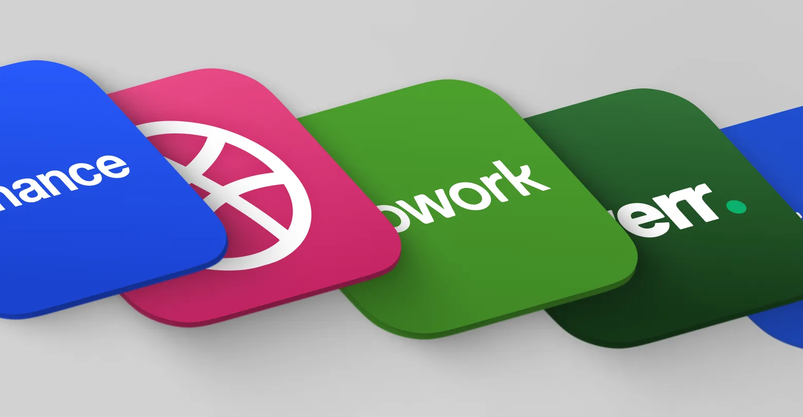

E-Commerce
The Hidden Costs of Using Freelancer Websites Like Fiverr or Upwork for Your Business

A Pattern I’ve Noticed Over the Years
As the CTO and lead developer for Leanne Digital, I spend a lot of my day investigating issues that get sent my way, usually involving website integration issues, plugin conflicts, or custom code that isn’t behaving the way it should.
A big part of that is inspecting PHP and Javascript code and logs to figure out why things are conflicting and what’s causing problems behind the scenes.
And one pattern I’ve noticed over the years…
A lot of these issues trace back to work that was outsourced through freelancer platforms like Fiverr or Upwork.
Now, to be clear, these platforms aren’t inherently bad. There are talented people on them, and they can be incredibly useful in the right situations.
But there are some risks that business owners don’t always see upfront.
Why Businesses Turn to Freelancer Platforms
It makes sense.
- Lower cost
- Quick turnaround
- Easy access to global talent
If you’re running a business and trying to manage costs, it can feel like a smart move.
I’ve done it myself when I was starting out. When you’re wearing multiple hats, sometimes you just need extra hands to get things done.
Where Things Can Get Tricky
When tasks are simple, everything usually runs smoothly. But once you get into more complex work like custom WordPress functionality, WooCommerce logic, or debugging, communication becomes a big factor.
It’s not just about speaking the same language, it’s about being able to clearly explain issues, understand requirements, and work through problems together. When that part isn’t solid, even small misunderstandings can lead to bigger issues down the line. Sometimes the time it takes to explain the issue takes longer than fixing the issue yourself.
Another thing to keep in mind is how these platforms operate. Many freelancers are working across multiple projects at once, which is completely understandable. But it can sometimes lead to delays or rushed work especially when timelines are tight. In some cases, the immediate problem gets fixed, but the long-term impact isn’t fully considered.
You’ll also often see freelancers listing a wide range of skills and multiple programming languages, frameworks, and platforms. While versatility is valuable, real depth usually comes from specialization. When you’re dealing with something more involved, like a WordPress or WooCommerce setup, having someone who truly knows that ecosystem can make a noticeable difference.
A Real-World Example
I was brought in to look at a WooCommerce site that had started crashing intermittently.
This was a busy eCommerce business doing thousands of dollars per week, and when the site went down, it directly impacted sales.
After digging into it, I learned that some custom code had been added previously to handle a specific shipping scenario.
The developer who wrote it was no longer available, and there wasn’t much documentation.
After working through the site and isolating different components, I eventually found the issue, a small piece of custom code that was causing server errors under certain conditions.
Once it was fixed, the site stabilized.
But the business had already experienced downtime and lost revenue in the process.
It’s Not Just About Cost — It’s About Value
As one industry perspective puts it, low-cost services can sometimes act as a temporary fix rather than a long-term solution, especially when there isn’t a deeper understanding of the business or system behind the work.
When you hire experienced developers or designers, you’re not just paying for the task, you’re paying for:
- Problem-solving ability
- Long-term thinking
- Maintainable, scalable work
- Ongoing support
When Freelancer Platforms Make Sense
There are definitely good use cases.
Repetitive and Low-Risk Tasks
If the work is simple and repeatable, these platforms are a great fit. Things like data entry, formatting, product uploads, or basic edits can be handled quickly without much risk. You save time and free yourself up for higher value work.
Small Front-End Development Tasks
For minor visual updates or layout tweaks, freelancers can work well. Just make sure to review their portfolio and start with a small task first. If they follow instructions well and the quality is there, you can continue from there with confidence.
Graphic Design and Creative Work
There are some very talented designers on these platforms. If you need a logo, social graphics, or quick design work, you can find good options. Always review past work, check ratings, and make sure the designs are original.
Overflow Work When You’re Busy
If you’re overloaded and need extra hands, these platforms can help you keep things moving. This works best when you already understand the task clearly and can give solid direction. Think of it as support, not full ownership.
Want It Done Right the First Time?
If you’re looking for reliable, high-quality work in SEO, design, WordPress development, and websites that are built to perform and convert…
Contact Leanne Digital today for an honest quote.
FAQ
Is Fiverr or Upwork bad for business?
Not at all. They’re great tools when used correctly. The key is knowing when a task is simple enough to outsource versus when it requires deeper expertise.
Can you build a full WordPress site using a freelancer?
You can, but it comes with risk. Without proper planning, documentation, and long-term support, you may run into issues later — especially as your site grows.
Why are freelancer prices so low?
Many freelancers operate on volume, taking on multiple projects at once. Lower pricing can also reflect differences in experience, specialization, or scope of work.
What should I look for when hiring a freelancer?
Look for a strong portfolio, consistent reviews, clear communication, and ideally start with a small test task before committing to a larger project.
Is it more expensive to fix issues later?
In many cases, yes. Troubleshooting and repairing existing work can take more time than building something properly from the start.
Final Thoughts
Freelancer platforms like Fiverr and Upwork have their place, and when used the right way, they can be a valuable resource.
But when it comes to the core parts of your business, your website, your systems, and anything tied directly to revenue, it’s worth thinking beyond just the upfront cost.
Because in the long run, quality, reliability, and accountability tend to matter a lot more than saving a few dollars at the beginning.